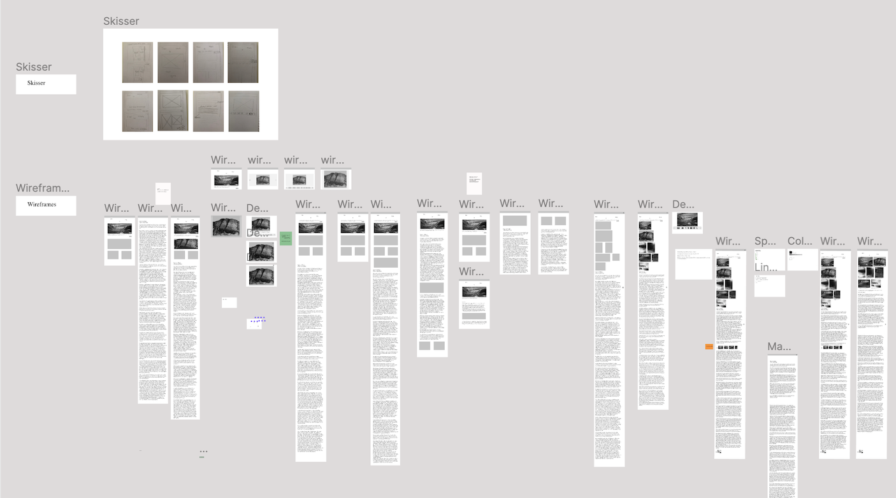
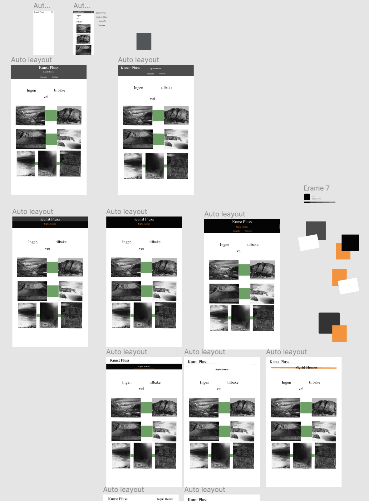
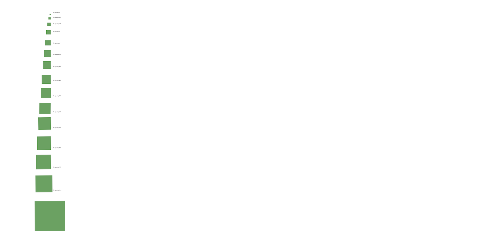
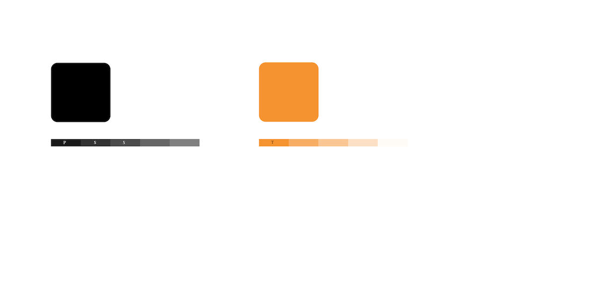

I dette teamet skulle jeg velge en publikajson og lage en nettside med publikasjonens innhold og design som et utgangspunkt. Her skulle innholdet struktureres og finne løsninger som gjør produktet mer brukbar og forståelig for en nettside utgave.
I denne oppgaven jobbet jeg individuelt, og valgte en publikason fra Kunst Pluss.
Prosessen
Prosessen
Kunst Pluss er et medlemsblad for ca. 20 000 medlemmer i kunstforeningene. Jeg kontaktet redaktøren for kunst pluss, for å anslå alderen på leser gruppen. Redaktøren kom med svar at medlemmene i kunstforeningene er personer som er litt oppe i årene fra 40-80 år. Kunst Pluss ønsker å nå ut til et yngere publikum, og er nå mer tilgengelig på steder som Narvesen. Tidsskriftet kommer ut i ca tre utgivelser i løpet av et år. Utseende er ganske likt med enkelt utseende, og samme design til hver utgivelse. De bruker fonten Times «serif», til overskrift og brødtekst. Fonten gir innholdet en seriøsitet og det skal skapes et nøytralt fremstilling av kunstnerne de publiserer.
Min problemstilling er:
Hvordan kan publikasjonen «Ingen vei tilbake» fra kunsttidsskriftet Kunst Pluss nå målgruppen i alderen 40-80 år gjennom en nettside?
Jeg jobbet i prosessen med utgangspunkt med innsiktfasen, der jeg gjorde dybde intervjuer og personas innenfor målgruppen.
Wireframes i Figma
 Designsystem
Visuell identitet
Farger
